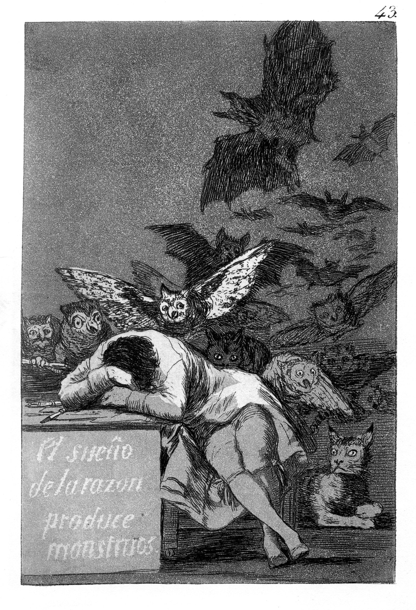
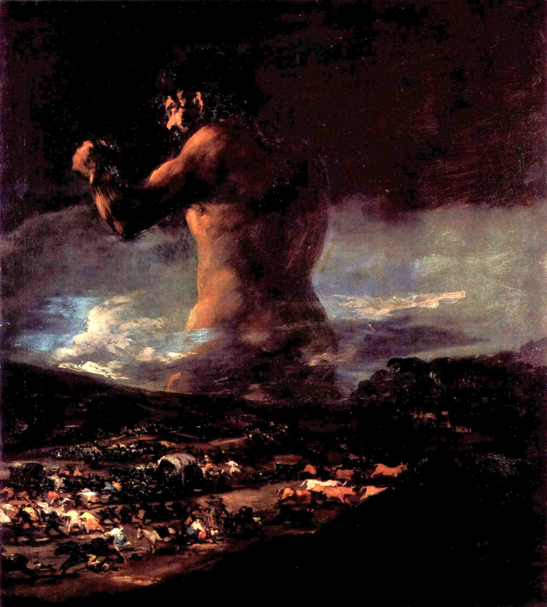
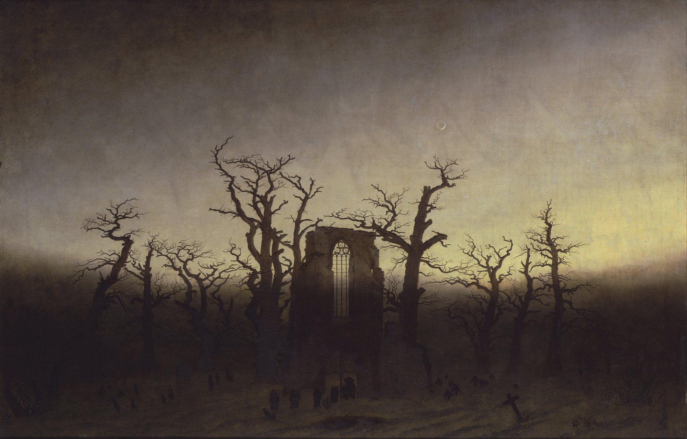

Séance 2 · Je remarque, Je repère · 55 minutes, menées jusqu'à 52
S'approprier d'autres œuvres
Où classer Dune et Ravage, parmi d'autres récits d'anticipation et de dystopie ?
Objet d'étude. Le roman et le récit du Moyen Âge au XXIe siècle. Parcours : fins du monde et recommencements. Ravage est proposé en lecture cursive, pour la seconde partie de l'oral ; Dune est une lecture complémentaire, en langue étrangère. L'élève présente une seule œuvre à l'oral, ici Ravage ; la comparaison avec Dune nourrit les raisons du choix et l'entretien.
Cette séance répond à une demande précise : s'approprier d'autres œuvres, pour classer Dune et Ravage en contexte. On ne lit pas des romans entiers. On lit de courts extraits du domaine public, ou l'on s'en tient au titre, à la date et à une situation, lorsque le texte reste protégé.
| Minutes | Déroulement |
|---|---|
| 0 à 8 | Rappel de la question directrice. Entrée par Goya : le sommeil de la raison. |
| 8 à 22 | Tableau des œuvres. Extraits de Zamiatine et d'Orwell. Situation de Huxley, Bradbury, Atwood. |
| 22 à 38 | Exercice 4 : classer, puis placer Dune et Ravage. |
| 38 à 48 | Mise en commun. Résistances : ce qui, dans chaque roman, refuse l'étiquette. |
| 48 à 52 | Spirale, tour Je remarque et Je repère. Point d'arrêt. |

La raison qui s'endort, ou la raison qui prétend tout organiser, peut engendrer des monstres. C'est une image, non une preuve. Elle aide à lire des mondes où l'ordre, le confort ou le salut se paient d'une perte.
Un horizon d'œuvres
Droits. Zamiatine est dans le domaine public en France (l'auteur est mort en 1937). Orwell, mort le 21 janvier 1950, l'est depuis le 1er janvier 2021 : de courtes citations vérifiées sont possibles. Huxley (mort en 1963), Bradbury (mort en 2012) et Atwood (vivante) restent protégés : titre, date et une phrase de situation, pas de couverture protégée, pas de citation étendue.
| Œuvre | Date | Ce que l'on en retient, pour classer | Droits, en classe |
|---|---|---|---|
| Thomas More, Utopia | 1516 | L'île nulle part, origine du mot et du geste. | Domaine public. |
| Jonathan Swift, Gulliver's Travels | 1726 | Satire par le voyage imaginaire. | Domaine public. |
| Eugène Zamiatine, Nous (Мы, We) | écrit 1920-1921, anglais 1924 | Un État de verre, des numéros au lieu de noms : souvent lu comme une source majeure de la dystopie du XXe siècle. | Domaine public en France. Court extrait. |
| Aldous Huxley, Brave New World | 1932 | Un bonheur organisé, une société de la consommation et du conditionnement. | Protégé. Titre et situation seulement. |
| George Orwell, Nineteen Eighty-Four | 1949 | Surveillance, langue contrainte, réécriture du passé. Une séquence d'anglais de Terminale existe déjà sur ce site, citée par son titre seulement. | Domaine public en France depuis 2021. Courte citation. |
| Ray Bradbury, Fahrenheit 451 | 1953 | Un monde où l'on brûle les livres. | Protégé. Titre et situation seulement. |
| Margaret Atwood, The Handmaid's Tale | 1985 | Une théocratie qui réduit les femmes à une fonction. | Protégé. Titre et situation seulement. |
| René Barjavel, Ravage | 1943 | Anticipation : 2052, la machine s'arrête, un ordre rural sous un chef. | Protégé. Court passage déjà lu, édition de la classe. |
| Frank Herbert, Dune | 1965 | Un empire, une ressource unique, un sauveur dont le récit se méfie. | Protégé. Court passage en anglais, traduction de travail. |
Deux extraits, pour s'approprier

Zamiatine, Nous, traduction de travail d'une phrase souvent citée, à vérifier dans une édition du domaine public : dans l'État Unique, les êtres portent des numéros, et la vie se déroule derrière le verre, au vu de tous. Ce n'est pas encore 2052, ni Arrakis : c'est un monde où la transparence est une contrainte.
Orwell, Nineteen Eighty-Four, courte citation dans le texte anglais, domaine public en France : « War is peace. Freedom is slavery. Ignorance is strength. » On peut en proposer une médiation, sans ouvrir ici une autre séquence déjà publiée.

Exercice 4. Classer, pour situer
Sur une feuille, tracez deux axes. Horizontalement : de « héritage de l'utopie » à « genre constitué au XXe siècle ». Verticalement : de « sous-genre de la science-fiction » à « roman qui résiste à l'étiquette ». Placez les œuvres du tableau, puis, avec un soin particulier, Dune et Ravage. Justifiez chaque placement en trois lignes au plus.
Éléments de corrigé de l'exercice 4
On n'attend pas une seule bonne carte, mais une justification. Des placements raisonnables :
- More, du côté de l'origine, hors science-fiction.
- Zamiatine, Huxley, Orwell, souvent au cœur d'un genre constitué ; Bradbury et Atwood dans son voisinage, avec des inflexions distinctes (le livre brûlé, la théocratie).
- Ravage : roman d'anticipation, 1943, contemporain de ce genre. Le Paris de 2052 a des traits de satire et de dystopie (le confort, la machine, la nature méprisée). La fin rurale se présente comme un salut, presque une utopie agraire, que l'on peut aussi lire comme une nouvelle servitude sous le patriarche. L'œuvre résiste donc à un classement unique.
- Dune : roman de science-fiction, souvent lu comme une épopée écologique et politique plus que comme une dystopie pure. L'Empire dépend d'une ressource ; un sauveur s'élève ; le récit, pourtant, avertit contre le Héros. On peut parler de traits dystopiques, non d'un étiquetage simple.
L'essentiel : classer, ce n'est pas forcer. La question directrice reste ouverte, et c'est elle que l'on emporte vers les séances suivantes.
Pli du professeur
Ne pas photocopier de couvertures protégées (Huxley, Bradbury, Atwood, ni les éditions encore protégées d'Orwell hors domaine public graphique). On ne renvoie à aucune autre adresse que celles du site. La séquence Orwell déjà en ligne se cite par son titre. Extraire de Nous et de 1984 des phrases courtes, vérifiées dans une édition fiable. Si un élève réduit Dune à « une dystopie », faire préciser ce qui résiste.
Les citations et les paginations sont à vérifier dans l'édition de la classe. Les traductions françaises de Dune proposées ici sont des traductions de travail, pour la classe ; elles ne reprennent pas la traduction publiée, qui reste protégée. Les extraits sont courts, dans la limite du droit de citation.
Point d'arrêt, à 52 minutes. On conserve le tableau des œuvres et les deux placements, Dune et Ravage, même s'ils restent discutés.
Issue de secours, huit minutes. Si le temps manque, on retient une seule question écrite au tableau, on ferme la spirale sur un mot, et l'on reporte le reste au travail à la maison.
Travail à la maison. Choisir une œuvre du tableau, autre que les deux romans de la séquence, et écrire un paragraphe : en quoi elle aide à classer l'un des deux, ou l'autre.